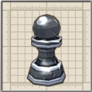
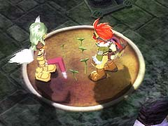
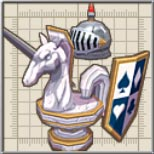

このリフトは、風船を数回攻撃しふくらませることで、動かすことができますが、攻撃しすぎると風船が割れてしまい動かせなくなります。

E 地点にいるキノコをE' 地点へ連れて行った後、F 地点の花鉢に話しかけてから、花鉢をE' 地点へ連れて行くことで、E' 地点に宝箱が出現します。

目次 > ゲームについて > 日本Falcom 攻略 > ZWEI II > ダンジョン一覧 > 駒の王都 (LV.22)
らんの眼
ZWEI II (ツヴァイ 2、ZWEI II Plus)
| 概要 | 情報 | 攻略チャート |
| フード交換 | ペットについて | ボス戦 |
| 敵キャラ一覧 | ハンターランク | G-コロッセオ |
| アイテム一覧 | ガジェット一覧 | トレジャー一覧 |
| ダンジョン一覧 | クリアデータ特典 | Plusの追加要素 |
| ZWEI II攻略へ | 目次へ戻る |
| 第1 階層 |
|  | A 地点へ移動すると、A' 地点に敵が出現します。 |
|  | B 地点の土の上で何度かジャンプすると、B' 地点に巨大な玉が出現しマップ上を転がり始めます。 玉が出現することで特にいいことも起こらないので、無視してもいいでしょう。 |
| C 地点へ移動すると、C' 地点に敵が出現します。 |
| 第2 階層 |
| A 地点のように、この階層には風船付きのリフトがいくつも存在します。 このリフトは、風船を数回攻撃しふくらませることで、動かすことができますが、攻撃しすぎると風船が割れてしまい動かせなくなります。 |
|
|
B 地点のレバーを動かすと、B' 地点のリフトを動かせます。リフトの風船を割ってしまったときにおすすめです。 |
|
D 地点のレバーを動かすと、D' 地点のリフトを動かせます。リフトの風船を割ってしまったときにおすすめです。 |
| E 地点へ移動すると、ちょっとしたイベントがあります。イベント後、E 地点にいるキノコをE' 地点へ連れていくと、宝箱が出現します。 | |
| 「ソロモンリング」を装備した状態だと、F 地点の花鉢に話しかけることができます。 E 地点にいるキノコをE' 地点へ連れて行った後、F 地点の花鉢に話しかけてから、花鉢をE' 地点へ連れて行くことで、E' 地点に宝箱が出現します。 |
|
|
G 地点のスイッチを押すと、G' 地点の扉が開きます。 |
|
H 地点のスイッチを押すと、H' 地点の扉が開きます。 |
| 第3 階層 |
|
A 地点のスイッチを押すと、A' 地点に巨大な玉が出現し回り出します。 |
|
B 地点のスイッチを押すと、B' 地点の扉が開きます。 また、B'' 地点を巨大な玉が回り始めます。 |
|
C 地点のスイッチを押すと、C' 地点の扉が開きます。 また、C'' 地点を巨大な玉が回り始めます。 |
|  | D 地点へ移動すると、敵が複数出現します。 |
| 概要 | 情報 | 攻略チャート |
| フード交換 | ペットについて | ボス戦 |
| 敵キャラ一覧 | ハンターランク | G-コロッセオ |
| アイテム一覧 | ガジェット一覧 | トレジャー一覧 |
| ダンジョン一覧 | クリアデータ特典 | Plusの追加要素 |
| ページの上部へ | ZWEI II 攻略へ | 目次へ戻る |